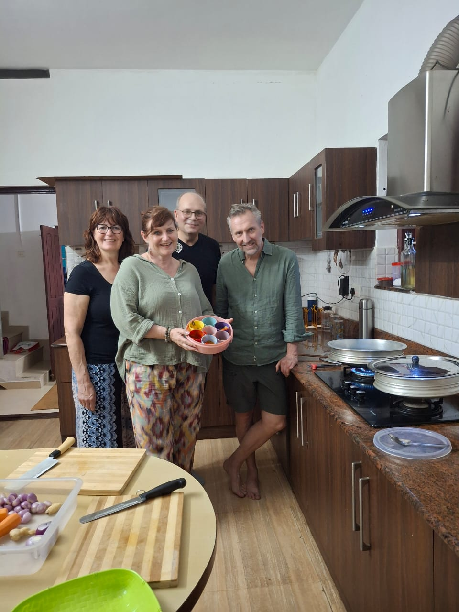
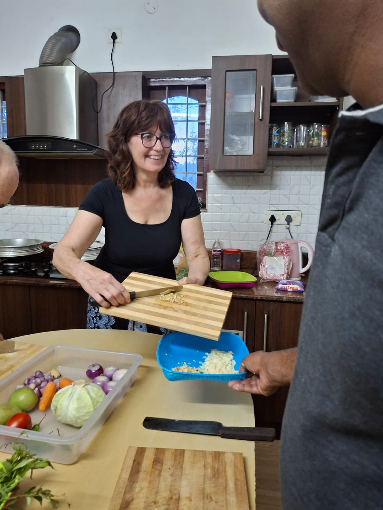
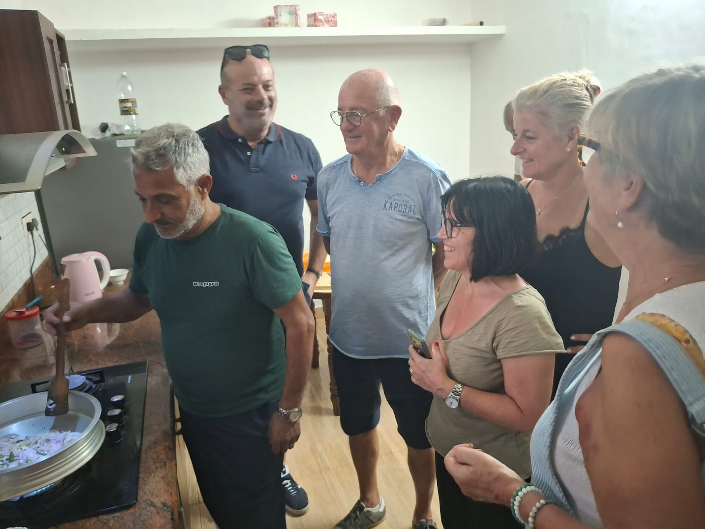

Periyar Wildlife Sanctuary
Periyar Wildlife Sanctuary is famous for elephants, forest views, nature trails, and boat safari experiences on Periyar Lake. It is one of the biggest reasons travelers visit Thekkady.
A powerful SEO page for tourists
Kumily and Thekkady are among Kerala's most beautiful tourist destinations. Visitors enjoy wildlife, nature, spice plantations, viewpoints, and relaxing local experiences.
Periyar Wildlife Sanctuary is famous for elephants, forest views, nature trails, and boat safari experiences on Periyar Lake. It is one of the biggest reasons travelers visit Thekkady.
Guests can explore spice plantations and learn about cardamom, pepper, cinnamon, cloves, coffee, and other Kerala spices grown around Kumily.




After exploring Kumily and Thekkady, enjoy authentic Kerala cooking at Sera's Cooking Class. It is a memorable local activity for travelers who want more than sightseeing.